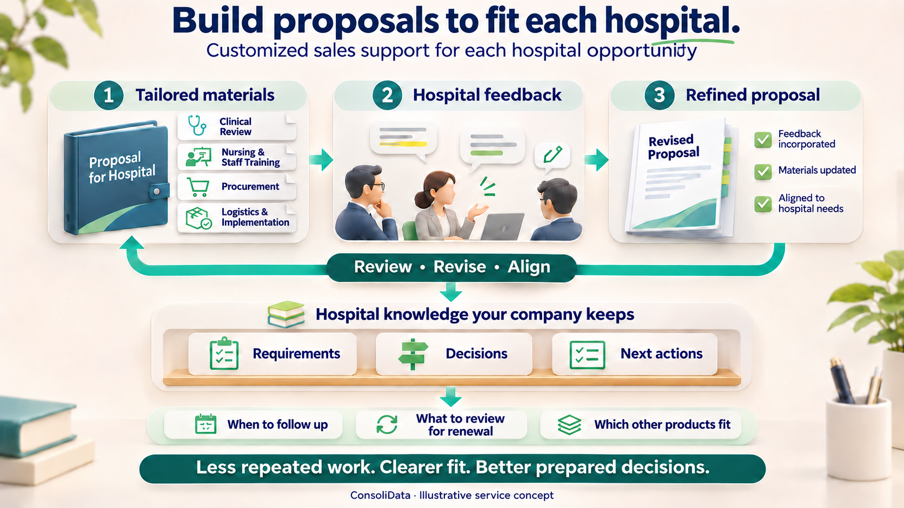

Clinical review
Organize approved product explanations and sources so clinical reviewers can find the information relevant to their evaluation.
CUSTOMER JOURNEY IMPROVEMENT
Your sales team needs proposals that fit how each customer buys and works. Feedback from every conversation should make the next proposal easier to prepare.
We help business-to-business teams prepare tailored proposals, relevant explanations, short videos and follow-up materials. We use customer feedback to refine the work and keep requirements, decisions and next actions in a company-owned record. We connect sales, training and support through one feedback system, judged by final business results.
Discuss one sales opportunityBring one product, one customer account and a recent sales conversation.
A MEDICAL-DEVICE SALES EXAMPLE
One hospital opportunity may need different materials for clinical review, nursing and staff training, procurement, and logistics and implementation. We help organize approved information around that opportunity, then revise the proposal as customer feedback arrives.

Organize approved product explanations and sources so clinical reviewers can find the information relevant to their evaluation.
Prepare clear training and handoff materials from approved guidance, with questions and support responsibilities kept visible.
Adapt confirmed commercial information and ordering details to the customer’s actual evaluation and purchasing requirements.
Organize confirmed supply, delivery, setup and implementation responsibilities. Keep outstanding arrangements visible.
Capture questions and requirements, revise the proposal, and show what changed. Your team coordinates the relevant customer review.
Keep a record about this hospital: requirements, decisions, owners, agreed follow-up timing and next actions.
The goal is less repeated preparation, earlier agreement on requirements and a clearer basis for the customer’s buying decision, helping your team compete for suitable business. We evaluate the impact through actual purchases, continued business and contribution after costs.
MEDICAL-DEVICE VISUAL GUIDES
Different teams need different explanations. See three role-specific concepts and a first draft grounded in a manufacturer’s current surgical technique guide.
Explore the visual guides and source draft → Generic concept illustration · Independent, unreviewed draft
Generic concept illustration · Independent, unreviewed draftCONTINUOUS IMPROVEMENT
Choose a real customer problem. Agree the intended result, comparison and observation period. Change one factor, carry out the work and follow what happens.
The context, evidence, action and result, ready for the next task.
Paid purchases. Continued purchasing. Contribution after costs.
Customer questions and other observations help explain the process. The agreed final business result determines whether a change helps. We keep the conditions and uncertainty with each finding so your team can use it appropriately.
WORKING KNOWLEDGE YOUR COMPANY CAN KEEP
For each hospital or customer account, keep requirements, decisions, owners and agreed dates with the materials. The record is about that customer, and it belongs to your company. The next conversation can build on what your team has learned.
Use confirmed dates, current requirements and feedback to decide when to follow up, what to review for renewal where applicable, and which other products may fit. Your team reconfirms current needs and approved product information before acting. Materials and records remain editable and exportable. Artificial intelligence supports preparation; your team reviews the information and agrees the changes.
See the work we can deliver →START WITH REAL WORK
Bring one product, one customer account and a recent sales conversation. We'll discuss how that task connects to the wider journey, what help would be useful and how to evaluate the result.
Scope, timing, evidence, acceptance terms and fee are agreed before work begins. There is no advance service fee for the first agreed enterprise validation.
Read first-project terms →